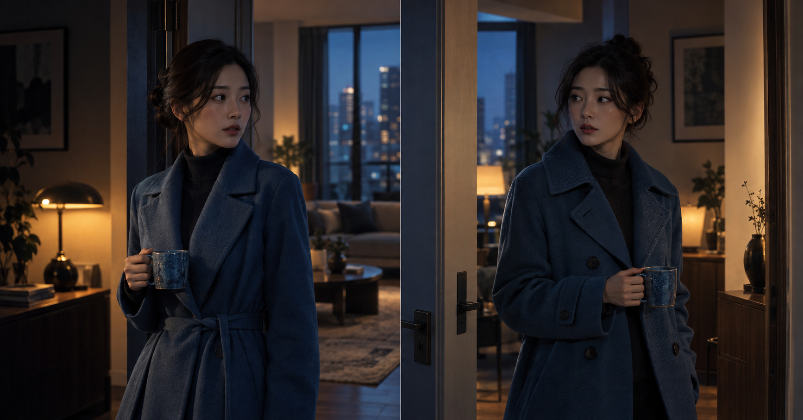
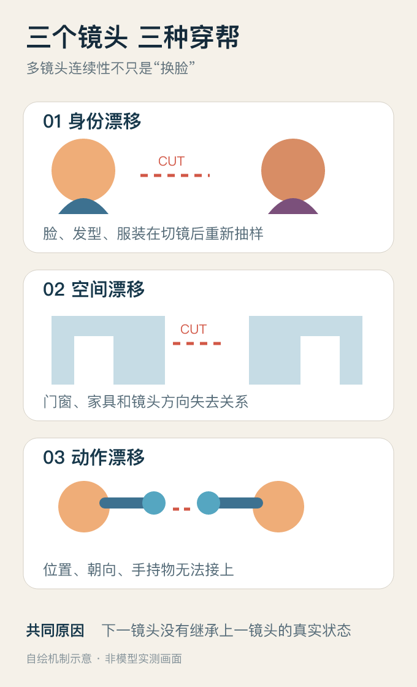
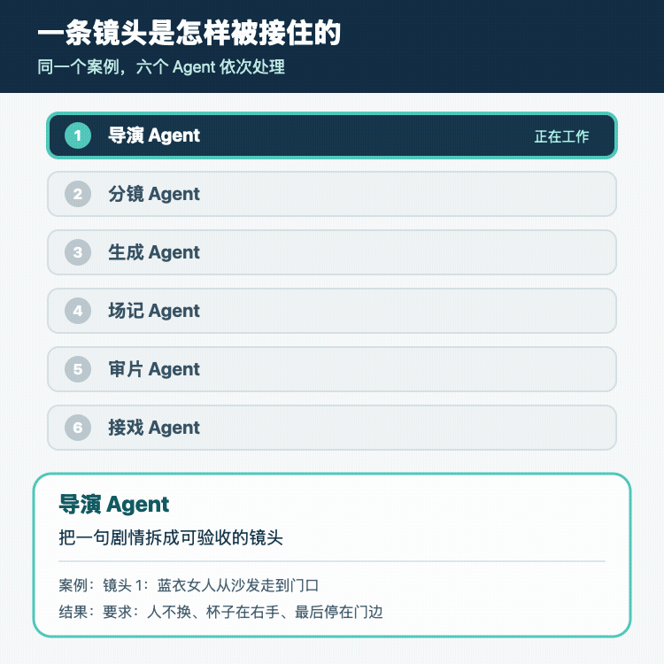
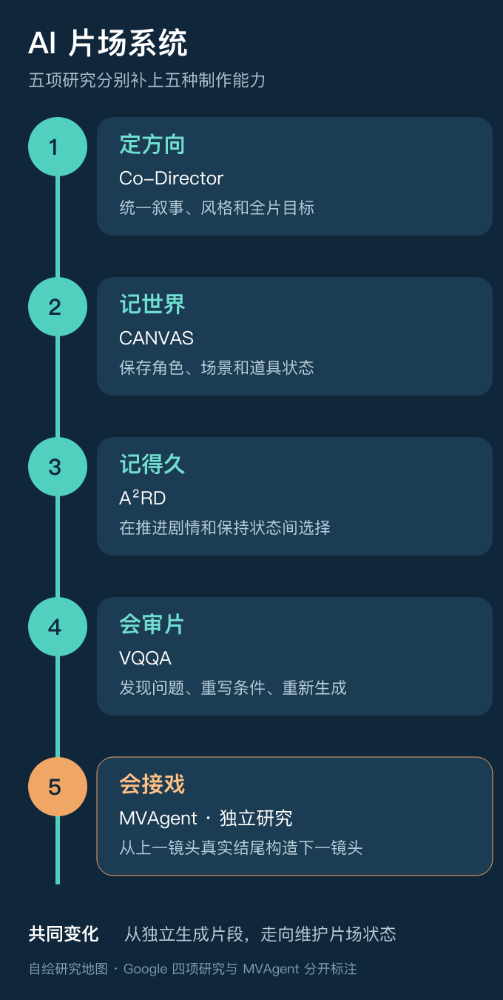
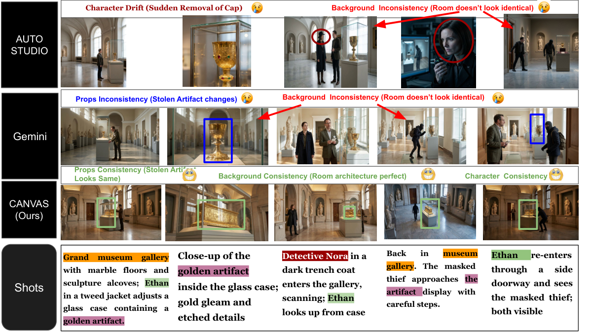

让下一镜头从沙发边继续，随后重写动作。
AI VIDEO · MULTI-SHOT CONTINUITY
AI 视频会拍镜头
为什么还拍不好故事
今天的模型已经很会制造瞬间，但一切镜头，人物、房间和动作经常一起漂移。 问题不只是模型记不住，而是系统没有持续比较剧本希望发生什么与画面实际发生什么。

TL;DR
- 生成画面和维持一个世界，是两种能力。
- 可靠系统要维护两本账：叙事意图与画面事实。
- 真正可用的长视频系统，不要求每次都生成正确，而要尽早发现错误、限制错误传播，并知道什么时候重拍。
漂亮片段为什么连不成故事
一束光穿过窗户，一个人回头，风吹动衣角。单看几秒，画面已经很像电影。可镜头一切，魔法经常就散了。
同一个人换了脸，外套多了一排扣子；刚才还在右手的杯子，下一镜头跑到左手；人物明明已经走到门边，切过去却又站回桌旁。每一段都像电影，连起来却不像同一个故事。

一句“同一个女人穿着蓝色外套走进厨房”，只能描述语义，不能唯一确定她的脸、外套剪裁、房间几何，也不能说明上一镜头真正生成到了哪里。
生成画面，和维持一个世界，是两种能力。文字告诉模型“发生什么”，但故事还需要一套系统保存“这个世界现在是什么样”。
真正难的不是记住 而是纠正偏差
剧本要求人物走到门口，模型却只让她走到沙发边。下一步并不是机械地“记住末帧”，而要做一个制作决定：
增加一个从沙发到门口的过渡镜头。
把当前位置作为失败原因，重新生成当前镜头。
因此，多镜头生成更像一个状态控制问题。系统同时维护两本账：一本记录叙事意图，一本记录画面事实。导演判断两者允许偏离多少，场记发现偏离，生成模型负责重拍或接下去。
六个 Agent 到底各自做什么
还是用“蓝衣女人右手拿杯子，从沙发走到门口”这个镜头。Agent 不是六个会聊天的小人，而是六个职责明确的制作模块。
导演 Agent
把剧情变成验收条件：人物、蓝色外套、右手杯子不能变，最后必须停在门边。
分镜 Agent
固定人物脸、外套剪裁、沙发和门的位置，并画出镜头起点与终点。
生成 Agent
根据分镜产生多个候选。它负责交作业，不负责证明作业正确。
场记 Agent
从成片末帧读取人物位置、朝向、道具和服装，记录实际结果而不是照抄剧本。
审片 Agent
比较两本账，指出是身份、道具还是关键动作失败，给出可执行的返工意见。
接戏 Agent
把验收后的末态交给下一镜头；若接受偏差，就同步修改后续分镜。

最重要的分工，是把生成和验收拆开。让同一个模型既交作业又给自己打分，很容易把“看起来不错”误当成“满足了剧情”。
五项研究分别补上哪一环

Co-Director：守住全片方向
先确定创意策略、叙事模式和审美方向，让故事线、关键帧、视频和音频共享同一目标。论文主实验仍是四镜头、12 秒虚构广告，不能外推成任意长片已经能够一键生成。
CANVAS：保存角色、背景和道具
给人物、地点和道具建立视觉锚点。故事再次回到同一地点时，系统检索原来的世界，而不是重新想象一间“差不多的房间”。
A²RD：处理长时记忆
在推动剧情的“外推”和保持人物环境的“插值”之间选择，并在每一段后检索、生成、修正、更新。它用额外候选和测试时计算换取更长的状态维持。
VQQA：审片和返工
先让视觉语言模型判断哪里没有满足目标，再修改条件、重新采样并从候选中选择。上限同时受审片模型和基础视频模型影响。
MVAgent：从真实末态接下一镜
观察上一镜头真正结束时的人物位置、朝向、动作与转场条件，再构造下一镜头输入，重点解决黑盒视频生成器之间不共享内部状态的问题。
论文图里能看到什么

CANVAS Figure 1。作者用同一段博物馆盗窃故事对比 AutoStudio、Gemini 与 CANVAS：前两者分别出现帽子消失、房间变化和道具外观变化，CANVAS 在这组作者实验中保持了角色、背景与道具的一致。图片来自 Ishani Mondal、Yiwen Song、Mihir Parmar、Palash Goyal、Jordan Boyd-Graber、Tomas Pfister、Yale Song，按 CC BY 4.0 引用；这是论文作者示例，不是本站实测。查看原论文
论文在故事板任务上报告，相对最佳基线，背景、角色和道具连续性分别提升 21.6%、9.6% 和 7.6%。它首先证明的是故事板与关键帧更稳定，并没有证明完整视频里的运动、表演和物理接触都已经解决。
连续性变好 为什么成本也会上升
连续性不是模型顺手得到的能力。系统需要角色参考图、场景多视角、道具状态、上一镜头末帧和故事长期记忆；还要生成多个候选，让视觉模型评分，再进行返工。
记忆本身也会犯错。如果观察模块误以为杯子在右手，错误就会作为“事实”传给下一镜头；如果评分模型过度关注局部瑕疵，反复优化后还可能偏离原来的故事目标。
竞争点正在变化。关键不只是生成更高清的几秒钟，而是谁能更便宜地发现偏差，并在错误扩散之前把世界拉回正轨。
今天做多镜头视频 可以先改什么
不要只保存每个镜头的提示词。为项目建立两列记录：左边是镜头必须完成的叙事意图，右边是实际生成结果。再记录角色、服装、道具、场景布局和镜头结束时的人物状态。
- 下一镜头从上一镜头的真实结尾开始。
- 把错误分成身份、空间、道具和动作，再决定补参考、改条件还是重拍。
- 预先写清哪些偏差必须重做，哪些偏差可以被后续剧情吸收。
AI 视频正在从生成问题变成控制问题。 模型负责提出镜头，系统负责判断镜头是否仍然属于这个故事。
来源与边界
- Google Research：Automating coherent long-form video generation，2026-09-24。
- Co-Director：全局创意搜索与多阶段生产。
- CANVAS：视觉故事板中的角色、背景和道具连续性。
- A²RD：分段长视频与多模态记忆。
- VQQA：生成后视频评价与条件迭代。
- MVAgent：跨镜头条件构造与策略优化。
本站未对上述系统进行同输入复现。所有数字均为论文作者在各自任务、模型和指标下报告的结果，不用于横向排名。